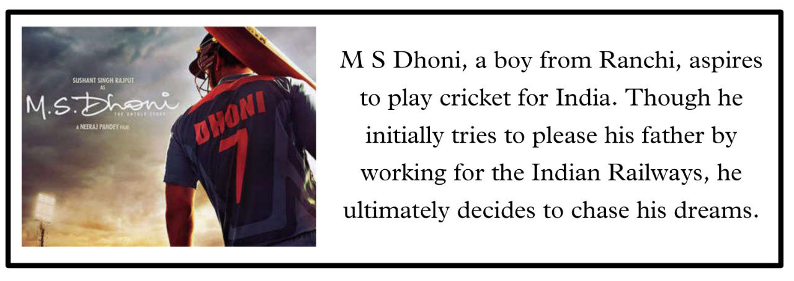
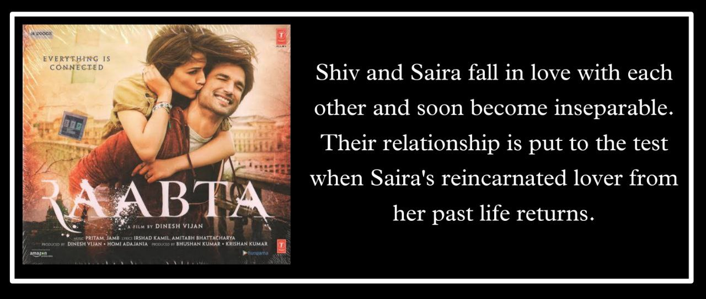
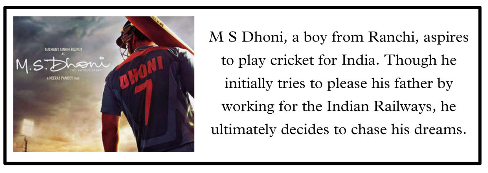
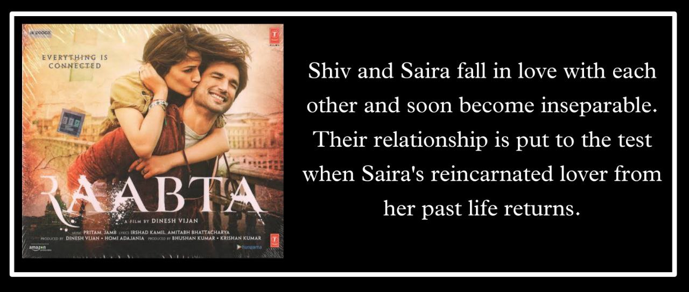

Sushant Singh Rajput was born on January 21, 1986, to Krishna Kumar Singh and Usha Singh, in Purnia, Bihar. He did his schooling at St. Karen's High School in Patna and then at Kulachi Hansraj Model School in New Delhi. Sushant Singh Rajput was good at studies and cleared 11 engineering entrance examinations in his entire life. In 2002, he lost his mother and his entire family moved from Patna to Delhi. Sushant had four sisters and his father. While Priyanka, Meetu and Neetu are in India, his fourth sister Shweta Singh Kirti is in the US. In 2003, he secured the seventh rank in the Delhi College of Engineering Entrance Exam and got admitted in B.E. Mechanical Engineering. Sushant was also a National Olympiad Winner in Physics. At Delhi College of Engineering, he actively participated in theatre. He drops out of college to pursue his acting career.


 



1. He secured All India Rank 7 in All
India engineering entrance exam and in DCE Engineering Entrance Exam his AIR was 07.!
2. He cleared total 11 National level competitive exams .!
3. SSR the is first Bollywood actor who had bought a piece of LAND on the MOON..
4. HE bought a piece of LUNAR LAND on the far side of the moon, In a region called "THE MARE MOSCOVIENSE" 🦸
5. He was also a trained Astronaut in NASA & got a scholarship from Stanford University !💖
6. He was international physics Olympiad winner 🏆❤️
7. He knew to fly Aeroplan ✈️!❤️
8. SSR Sir Featured His 2 own play titled "
(1) "Mrityunjaya : The Mahabharata's Re-interpretation From The Perspective Of Karna"
(2) "Moravia..The Two Of Us...A novel which takes up where prophecy left Off "💓
9. SSR Sir ,also in 2 Plays .."In 2007 he acted in his first Play, #PUKAAR & the other was a comedy #Dauda Dauda Bhaaga Bhaaga sa"🥰
10. In NASA ,only 2 legends' pictures are there ..One is "Tom Hanks" from Hollywood and Other is "Our beloved SSR" from the late Bollywood....💎
11. Do you know.."SSR was in contact with top 10 scientists in this world". he used to chat with them via email..💖
Late actor SSR passed out on 14th June 2020. He died under various mysterious circumstances. Police declared it as Suicide without any investigation. But the suicide theory was not acceptable because the things that had came in front of public was clearly depicting it as a cool blooded murder. Public were not accepting the theories put in front by police and that's why public demanded CBI inquiry in the case. After hearing about the public demand, The Supreme Court held that the FIR registered in Bihar's Patna was legitimate and ordered the CBI to investigate the case. It also said that the Bihar government was competent to recommend transferring the case to the CBI. It's been more than 1 and half years that the case is with CBI, till now we have not got any update from CBI.
Sushant was actually murdered because the things that came in front of public is clearly telling that it is a cool blooded murder. The most striking thing that have hurt public is this that, if tomorrow someone from our own family will go to Bollywood then the same thing will happen. This is the main reason that people protested a lot. If today we will not stand beside him then tomorrow we will be in place of him. The matter can be normal for us but not for that 74 years old father who lost his son, not for the sisters who will not be able see their brother once again, not for those fans who will never be able to get reply from him again. Now answer me one thing, what will happen if tomorrow the same thing will happen with someone from your family? Will you feel good? The answer is no! You can also come and join us if you listen to your heart and raise your voice against injustice.